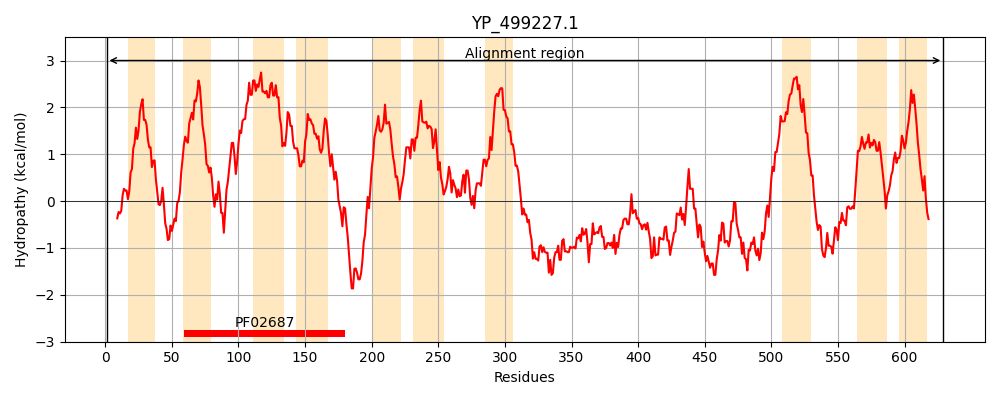

Hit Accession: A6QEX1
Hit TCID: 3.A.1.134.7
Hit Description: gnl|BL_ORD_ID|624 gnl|TC-DB|A6QEX1|3.A.1.134.7 ABC-type transport system permease component VraG OS=Staphylococcus aureus (strain Newman) GN=vraG PE=4 SV=1
Mach Len: 629
e:0.000000
Query TMS Count : 10
Hit TMS Count: 10
TMS-Overlap Score: 11.350000
Predicted Substrates:None
BLAST Alignment:
Score: 3141 , Bit scores: 1214 bits, E-value: 0.0e+00, Alignment length: 629, Percentage identity: 100
Query: 1 MTFNEIIFKNFRQNLSHYAIYLFSLITSVVLYFSFVALKYAHKLNMTESYPIIKEGSQVGSYFLFFIIIAFLLYANVLFIKRRSYELALYQTLGLSKFNIIYILMLEQLLIFIITAILGIIIGIFGSKLLLMIVFTLLGIKEKVPIIFSLRAVFETLMLIGVAYFLTSAQNFILVFKQSISQMSKNNQVKETNHNKITFEEVVLGILGIVLITTGYYLSLNIVQYYDSIGTLMFILLSTVIGAYLFFKSSVSLVFKMVKKFRKGVISVNDVMFSSSIMYRIKKNAFSLTVMAIISAITVSVLCFAAISRASLSSEIKYTAPHDVTIKDQQKANQLASELNNQKIPHFYNYKEVIHTKLYKDNLFDVKAKEPYNVTITSDKYIPNTDLKRGQADLFVAEGSIKDLVKHKKHGKAIIGTKKHHVNIKLRKDINKIYFMTDVDLGGPTFVLNDKDYQEIRKYTKAKHIVSQFGFDLKHKKDALALEKAKNKVDKSIETRSEAISSISSLTGILLFVTSFLGITFLIAVCCIIYIKQIDETEDELENYSILRKLGFTQKDMARGLKFKIMFNFGLPLVIALSHAYFTSLAYMKLMGTTNQIPVFIVMGLYICMYAVFAVTAYNHSKRTIRHSI 629
MTFNEIIFKNFRQNLSHYAIYLFSLITSVVLYFSFVALKYAHKLNMTESYPIIKEGSQVGSYFLFFIIIAFLLYANVLFIKRRSYELALYQTLGLSKFNIIYILMLEQLLIFIITAILGIIIGIFGSKLLLMIVFTLLGIKEKVPIIFSLRAVFETLMLIGVAYFLTSAQNFILVFKQSISQMSKNNQVKETNHNKITFEEVVLGILGIVLITTGYYLSLNIVQYYDSIGTLMFILLSTVIGAYLFFKSSVSLVFKMVKKFRKGVISVNDVMFSSSIMYRIKKNAFSLTVMAIISAITVSVLCFAAISRASLSSEIKYTAPHDVTIKDQQKANQLASELNNQKIPHFYNYKEVIHTKLYKDNLFDVKAKEPYNVTITSDKYIPNTDLKRGQADLFVAEGSIKDLVKHKKHGKAIIGTKKHHVNIKLRKDINKIYFMTDVDLGGPTFVLNDKDYQEIRKYTKAKHIVSQFGFDLKHKKDALALEKAKNKVDKSIETRSEAISSISSLTGILLFVTSFLGITFLIAVCCIIYIKQIDETEDELENYSILRKLGFTQKDMARGLKFKIMFNFGLPLVIALSHAYFTSLAYMKLMGTTNQIPVFIVMGLYICMYAVFAVTAYNHSKRTIRHSI
Sbjct: 5 MTFNEIIFKNFRQNLSHYAIYLFSLITSVVLYFSFVALKYAHKLNMTESYPIIKEGSQVGSYFLFFIIIAFLLYANVLFIKRRSYELALYQTLGLSKFNIIYILMLEQLLIFIITAILGIIIGIFGSKLLLMIVFTLLGIKEKVPIIFSLRAVFETLMLIGVAYFLTSAQNFILVFKQSISQMSKNNQVKETNHNKITFEEVVLGILGIVLITTGYYLSLNIVQYYDSIGTLMFILLSTVIGAYLFFKSSVSLVFKMVKKFRKGVISVNDVMFSSSIMYRIKKNAFSLTVMAIISAITVSVLCFAAISRASLSSEIKYTAPHDVTIKDQQKANQLASELNNQKIPHFYNYKEVIHTKLYKDNLFDVKAKEPYNVTITSDKYIPNTDLKRGQADLFVAEGSIKDLVKHKKHGKAIIGTKKHHVNIKLRKDINKIYFMTDVDLGGPTFVLNDKDYQEIRKYTKAKHIVSQFGFDLKHKKDALALEKAKNKVDKSIETRSEAISSISSLTGILLFVTSFLGITFLIAVCCIIYIKQIDETEDELENYSILRKLGFTQKDMARGLKFKIMFNFGLPLVIALSHAYFTSLAYMKLMGTTNQIPVFIVMGLYICMYAVFAVTAYNHSKRTIRHSI 633 | Protein Hydropathy Plots: |
|---|
|  | |
Pairwise Alignment-Hydropathy Plot:
|
|---|
|